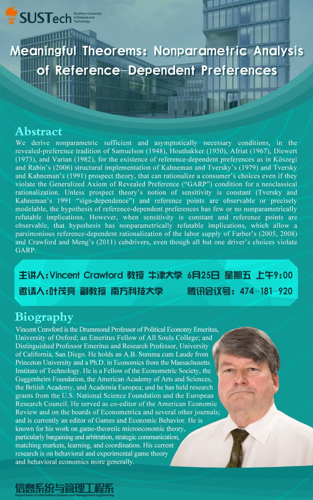

应叶茂亮副教授的邀请，牛津大学、加州大学圣地亚哥分校Vincent Crawford教授于6月25日上午为信管系、商学院和南科大师生在腾讯会议上带来题为Meaningful Theorems: Nonparametric Analysis of Reference-Dependent Preferences的学术讲座。Vincent Crawford教授是行为经济学和（行为与实验）博弈论的国际领军学者，美国人文与科学院、欧洲科学院、英国科学院院士，Econometric Society（经济学最重要的经济学国际学术组织之一）的会士，博弈论顶刊Games and Economic Behavior的一位主要编辑。Vincent Crawford教授在博弈论微观分析例如学习理论（learning）、协作（coordination）等（行为与实验）博弈论话题上做出了世界最前沿的研究。叶茂亮副教授2020年发表于Management Science的论文“One Step at a Time: Does Gradualism Build Coordination?”便引用了其在顶级经济学刊物发表的5篇相关论文（3篇Econometrica，一篇AER，一篇Journal of European Economic Assocation）。
该场学术讲座基于参照点依赖 （Reference dependence）的已有文献包括Vincent Crawford教授的开创性研究（如 Crawford and Meng 2011发表于American Economic Review的研究），进一步探讨了与显示偏好一般公理GARP(Generalized Axiom of Revealed Preference)、参照点依赖 （Reference dependence）相关的更一般化的经济理论和非参估计方法，并以出租车司机劳动供给的数据为例做出估计。
信管系和商学院部分师生、国内外各大高校相关领域的华人学界同行在线参与热烈讨论。该讲座进一步促进商学院和国内同行及国际著名学者的交流，提升南科大商学院在国内外经管学界的知名度。
